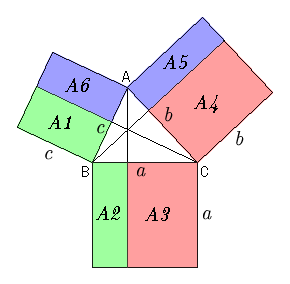

- Draw a triangle ABC,then draw three squares sharing their sides with the triangle ABC.
- Draw three lines through A,B,and C so that each line is perpendicular to the
opposite side.
- You can prove A1=A2, A3=A4, and A5=A6 by using the applet bellow.
- Now you understand
a^2=A2+A3=A1+A4=(c^2-A6)+(b^2-A5)
=c^2+b^2-2*A6
- Find the expression for the area A6.
|

|